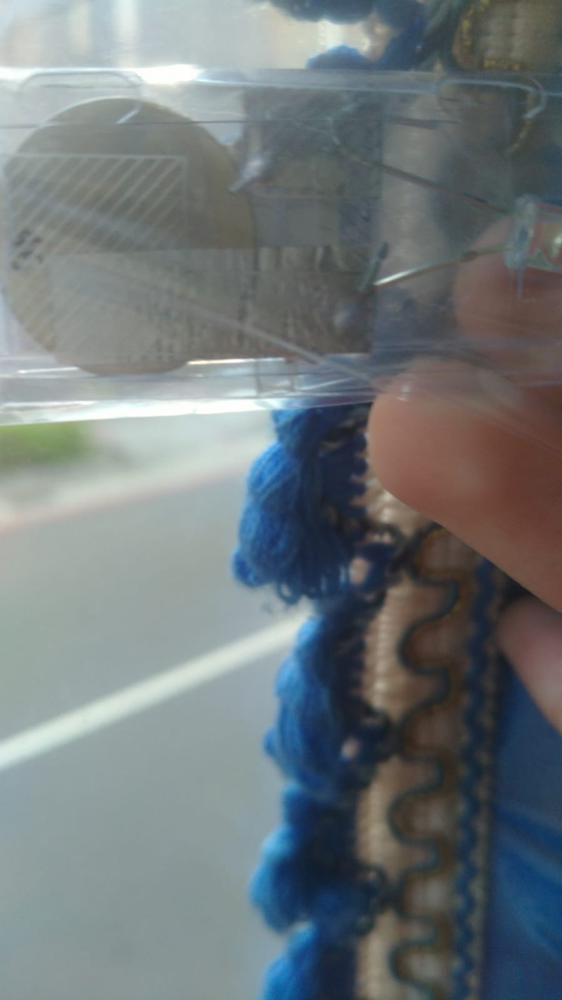

Untuk pelajaran Fisika, terdapat tugas ekstra poin (+2 star/poin) yaitu untuk foto sebuah elemen di Taiwan.
Inilah merupakan elemen-elemen yang di Taiwan (Gambar):
Dalam gambar ini, terdapat baterai litium (yang lingkaran abu-abu), dan aluminum di dalam (untuk membuat LED).
Juga terdapat oksigen, nitrogen, argon, dll di luar jendela bus (Gambar ini diambil dalam bus).